Co-op Commander Guide: Tychus
Legendary Outlaw
Sections on this Page
Commander Summary
Tychus leads a band of powerful outlaws, each with a unique ability and gear, to control the battlefield.

Level Unlocks
| Level/Icon | Name | Description |
|---|---|---|
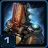 |
Just Like Old Times | Tychus has a 100 supply maximum and can recruit legendary Outlaws from Joeyray's Bar. Heroic units. When an Outlaw is killed, they escape death and can be recruited again from the Bar. |
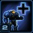 |
More the Merrier | Unlocks the ability to recruit a 5th Outlaw to Tychus' crew. |
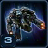 |
Odin | Unlocks the ability to call down the Odin at a target location, picking up Tychus and taking him as its pilot and dealing 150 damage on impact. The Odin is controllable and will fight for 60 seconds. Call down the Odin from the top panel. |
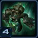 |
New Outlaw: Kev "Rattlesnake" West |
One of the Muscle. Adept at supporting friendly units and dealing with armored ground units. Can use Deploy Revitilizer. Recruited from Joeyray's Bar. Can attack ground units. |
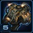 |
Engineering Bay Upgrade Cache |
Unlocks the following upgrades at the Engineering Bay:
|
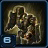 |
New Outlaw: James "Sirius" Sykes |
One of the Guns. Adept at deploying Turrets and imbuing both himself and his Turrets with special abilities. Can use Deploy Warhound Turret. Recruited from Joeyray's Bar. Can attack ground and air units. |
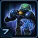 |
First One's on the House | Reduces the mineral and gas costs of Tychus' first Outlaw by 50%. |
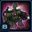 |
New Outlaw: Rob "Cannonball" Boswell |
One of the Muscle. Adept at taking damage and dealing it back. Can use Heavy Impact. Recruited from Joeyray's Bar. Can attack ground units. |
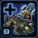 |
Need a Ride? | Increases the maximum number of Medivacs Platforms from 1 to 3. |
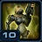 |
New Outlaw: Vega |
One of the Fixers. Adept at taking control of enemy units. Can use Dominate. Can be upgraded to be a Detector. Recruited from Joeyray's Bar. Can attack ground and air units. |
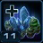 |
Five Finger Discount | Reduces the cost of all gear by 100 minerals and 100 gas. |
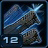 |
Primary Ultimate Gear Cache |
Unlocks the following upgrades:
|
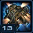 |
Fully Loaded |
Unlocks the following upgrades at the Engineering Bay:
|
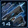 |
Advanced Ultimate Gear Cache |
Unlocks the following upgrades:
|
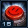 |
Big Red Button |
Unlocks the following upgrade at the Engineering Bay.
|
Highlighted rows denote large power spikes for the commander.
Achievements
The commander-specific achievements for Tychus are:
| Achievement | Name | Description |
|---|---|---|
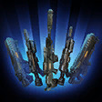 |
Buy Buy Buy (Buy Buy) | Purchase 5 pieces of ultimate gear by 20 minutes on Hard difficulty. |
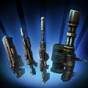 |
I Ain't Flipping This Bill | Purchase the ultimate gear of every heroic unit. |
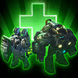 |
Out-Of-Network Coverage | Heal 50,000 life on allied units in Co-op Missions. |
| Push In Case of Emergency | Kill 1,000 units with the Odin's Big Red Button ability. |
Calldowns
| Calldown | Name | Description | Recommended Usage | Numbers |
|---|---|---|---|---|
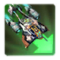 |
Medivac Pickup | Instantly transports all Outlaws in the target area to a targeted location, healing and cloaking them (10 seconds) on drop-off. If these units are attacked, they will stop healing and decloak. |
|
|
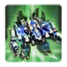 |
Calldown Odin | Calls down the Odin at the target location, dealing 150 damage on impact. The Odin takes Tychus as the pilot and revives him if he is inactive. It is controllable and will fight for 60 seconds. |
|
|
The Calldown Odin ability brings an Odin onto the battlefield. This unit has abilities itself, shown below. Depending on whether the "Big Red Button" is researched, it will have one of these two abilities. You only have one charge for each of these abilities, so optimal placement (and timing) is required.
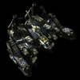
Odin
| Ability | Name | Description |
|---|---|---|
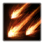 |
Barrage | Stuns all enemies and deals 1000 damage over 5 seconds in a large area. |
| Big Red Button | Calls down a Nuclear Strike at a target location. Nukes take 3 seconds to land, but they deal up to 1000 damage in a large area. |
The Odin's Big Red Button ability does damage depending on how far away from the center of the target area the enemy is. Below shows an image after an Odin Nuke has been dropped, overlayed with the damage dealt.
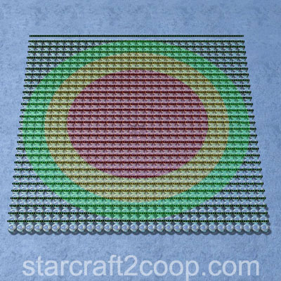
The damage details are shown below:
| Distance from Center | Damage |
|---|---|
| 0-8 | 1000 |
| 8-10 | 500 |
| 10-12 | 250 |
Sub-Ascension Leveling
Difficulty: Very Easy
Tychus has most of the tools he needs to deal with any mission and enemy composition at level 1, making him one of the easier commanders to level. Use Nikara as your primary healer until you get Rattlesnake. Due to the lack of upgrades available, build only two Engineering Bays.
Masteries
Below are the three Power Sets for Tychus with the recommended point allocations for each. Note that these are meant to serve a general, all-purpose build that is effective across all maps with no Prestiges selected. You are highly encourged to change these masteries to suit your playstyle and particular challenges you face (e.g. Weekly Mutations).
Power Set 1:
| Power | Value | Recommended Points to Add | Further Considerations |
|---|---|---|---|
| Tychus Attack Speed | 1% per point 30% maximum |
0 | Depending on a player's playstyle, more aggressive players may want to get the Shredder Grenade mastery to reduce its cooldown, thus allowing them to spam it more often. This is particularly the case when players prefer to actively play Tychus and use all his outlaws' abilities as efficiently as possible. |
| Tychus Shredder Grenade Cooldown | -1% per point -30% maximum |
30 |
The Shredder Grenade is used to provide an initial burst of damage that usually kills off low-HP units in an engagement. Reducing this cooldown will allow players to take more engagements and play more aggressively, which is generally rewarded in co-op.
Power Set 2:
| Power | Value | Recommended Points to Add | Further Considerations |
|---|---|---|---|
| Tri-Outlaw Research Improvement | 0.5% per point 15% maximum |
30 | In general, both these masteries are not too great. The Tri-Outlaw mastery only affects the three upgrades in the engineering bay, and not the class of outlaws. The Outlaw availability might be useful on certain mutators where you get attacked very early on and need some defense. |
| Outlaw Availability | -3 sec per point -90 sec maximum |
0 |
Unless you are in very niche circumstances (e.g. speedrunning) where having an outlaw out early is critical, the Tri-Outlaw Research mastery is the better choice (despite it being relatively ineffective too). Additionally, in regular missions, you rarely will have the resources to recruit your first outlaw so early in the game.
Power Set 3:
| Power | Value | Recommended Points to Add | Further Considerations |
|---|---|---|---|
| Medivac Pickup Cooldown | -1.5 sec per point -45 sec maximum |
? | Both of these choices are competitive, depending on the mobility the player needs. In the case that mobility is not required very much, players should consider reducing the cooldown for the Odin, especially if it helps them push into enemy defenses effectively. |
| Odin Cooldown | -4 sec per point -120 sec maximum |
? |
The Medivac Pickup Cooldown allows you to spam Medivacs, allowing for greater mobility and less chances of outlaw losses. The Odin is usually used for pushing into enemy bases, which reducing the cooldown by 120s (to a 240s cooldown) helps a lot. Both these choices are competitive.
Prestiges
Below are the prestiges for Tychus. Note that "Effective Level" is the level at which the prestige achieves it full effect.
| Level | Name | Description | Effective Level | Notes |
|---|---|---|---|---|
| 1 | Technical Recruiter |
|
1 |
|
| This prestige allows outlaws to spam their abilities more often, and compounds very well with the Tychus Shredder Grenade cooldown. Players that prefer to actively micro their outlaws and are more active with their outlaw ability usage may get a lot of value out of this prestige. | ||||
| Level | Name | Description | Effective Level | Notes |
|---|---|---|---|---|
| 2 | Lone Wolf |
|
1 |
|
| Lone Wolf is an extremely powerful prestige, that when used well, can allow the player to push on multiple sides of the map simultaneously. This obviously does require a lot of micromanagement and individual unit control from the player's part, but can be extremely rewarding when pulled off. | ||||
| Level | Name | Description | Effective Level | Notes |
|---|---|---|---|---|
| 3 | Dutiful Dogwalker |
|
3 |
|
| The loss of the Barrage is insignificant in this prestige, but the loss of the Big Red Button removes the Odin's ability for a large area burst damage. However, this is compensated by the increased duration and the cooldown reduction, which also compounds well with the Odin Cooldown mastery. | ||||
For general play, all of the Tychus prestiges are solid picks. A good choice for a prestige is Technical Recruiter as it is versatile enough to handle any map with ease.
Recommended Army Composition
The recommended army composition for Tychus is below. Note that this assumes no Prestige talent selected and recommended Mastery Allocations. This is a basic recommendation for your army framework. It is recommended to gain an understanding for each of the units in the Units section and further add tech units so that you are able to better handle the situations you face.
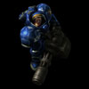
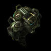
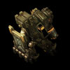
Rattlesnake first allows a player to get adequate healing but also an increase to their potential damage output. They may then get Sirius to handle air units as well as further increase their potential damage output. Additionally, his turrets are detectors, which reduces the need to recruiting a Fixer for detection.
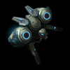
Add Crooked Sam to your Outlaws for his powerful disabling abilities as well as high single-target damage through his Demolition Charges.
Outlaws
Tychus has three classes of outlaws. These are:
- Guns: These are damage-dealers.
- Muscles: These outlaws are designed for high survivability and tanking.
- Fixers: These units are specialist units who with very unique skills designed with a certain gimmick in mind.
Each Outlaw costs 1000/200 to recruit. However, the first outlaw will cost only 500/100 to recruit. Upgrades cost 600/150, while Ultimate Upgrades cost 1200/400. Ultimate Upgrades can only be bought once all three Primary Upgrades have been purchased. This means that the total cost of a single outlaw (assuming no first outlaw discount) is 4000/1050.
Tychus will spawn at the 3:00 mark, and an outlaw slot will open at the same time. Then, every 4 minutes, another slot will open for another outlaw to be recruited.
For more information on Tychus' unit stats, comparison between units and upgrade calculations, visit the Data Tables page.
Tychus's outlaws are listed below:
Guns:
Tychus Findlay
Ability:
| Ability | Name | Description | Cooldown |
|---|---|---|---|
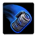 |
Shredder Grenade | Deals 75 damage to enemy units in the target area. | 20 seconds |
Primary Gear:
| Gear | Name | Description |
|---|---|---|
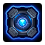 |
KD9a Implosion Core | Allows Tychus' Shredder Grenade to pull affected units to the center of its area of effect, stunning them for 2 seconds. |
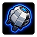 |
Vanadium Shell | Increases the damage of Tychus' Shredder Grenade by 50. |
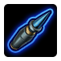 |
Kel-Morian Ripper Rounds | Tychus' attacks decrease the armor of their targets by 5 for 2 seconds. |
Ultimate Gear:
| Ultimate Gear | Name | Description |
|---|---|---|
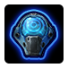 |
SureShot Networked Helm | Increases Tychus' weapon damage by 20% for each Outlaw in his immediate vicinity. |
Notes:
- Use him to defend the first attack wave, clear rocks and then push out.
- Combined with the Medivac Pickups, he should not die while pushing out early.
- If the Odin is available and can be used efficiently, revive him by calling down the Odin.
- Shredder Grenade with the KD9a Implosion Core works great when combined with Nux's Ultrasonic Pulse.
Crooked Sam
Ability:
| Ability | Name | Description | Cooldown |
|---|---|---|---|
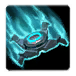 |
Demolition Charge | Marks a target unit, dealing 500 damage after 5 seconds. Holds up to 3 charges. | 30 seconds |
Primary Gear:
| Gear | Name | Description |
|---|---|---|
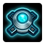 |
LarsCorp G7 Charges | Increases the damage of Crooked Sam's Demolition Charge by 100%. |
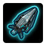 |
Moebius Restraint Matrix | Stuns and disables the detection of units hit by Crooked Sam's Demolition Charge. |
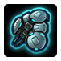 |
Procyon Shade Suit | Prevents Crooked Sam from taking any damage and increases his movement speed by 80% for 5 seconds after being attacked. Cannot occur more than once every 15 seconds. |
Ultimate Gear:
| Ultimate Gear | Name | Description |
|---|---|---|
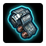 |
Enhanced Hostilities Kit | Reduces the charge-up time of Demolition Charge by 3 seconds each time Crooked Sam attacks. |
Notes:
- Perfect for taking down objectives and high-HP structures.
- Can place multiple Demolition Charges on trains like those on Oblivion Express and Part & Parcel.
- Moebius Restraint Matrix can disable skills, like those on Hybrid Dominators.
- Draws a lot of aggro, so keep him behind your other outlaws.
James "Sirius" Sykes
Ability:
| Ability | Name | Description | Cooldown |
|---|---|---|---|
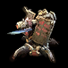 |
Deploy Warhound Turret | Deploy an automated defensive turret. Turrets gain the same gear bonuses as Sirius himself. Times out after 60 seconds. Holds up to 5 charges. Can attack ground and air units. |
15 seconds |
Primary Gear:
| Gear | Name | Description |
|---|---|---|
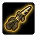 |
SA-55 Thunderbolt Missiles | Equips Sirius with missiles that deal 100 damage to 8 air targets. Warhound Turrets deal 100 to 2 air targets. |
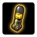 |
Moebius M34 Terror Rounds | Provides a 30% chance for Sirius to cast Fear in a small area with each attack. Enemy units in the area will run around in fear for 3 seconds. Warhound Turrets have a 3% chance to cast Fear with each attack. |
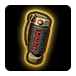 |
D99 Detonator | When Sirius is defeated, he triggers an explosion, dealing 300 damage to enemy units in an area around him. Warhound Turrets deal 50 damage on death. |
Ultimate Gear:
| Ultimate Gear | Name | Description |
|---|---|---|
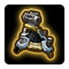 |
Umojan Turret Frame | Increases the life and weapon damage of Warhound Turrets by 75%. |
Notes:
- Has great anti-air capabilities with the SA-55 Thunderbolt Missiles Upgrade.
- His turrets have detection, so they can be used if no detection is present.
- Turrets can be used to tank for other outlaws in the early game if you do not have a healer as you take engagements.
Muscles:
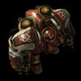
Miles "Blaze" Lewis
Ability:
| Ability | Name | Description | Cooldown |
|---|---|---|---|
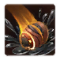 |
Oil Spill | Douses enemy ground units in oil, reducing attack and movement speed by 75% and preventing them from cloaking. When a unit under the effect of Oil Spill is hit by a fire attack, it takes 5 (5 vs Light) damage per second over 10 seconds. | 15 seconds |
Primary Gear:
| Gear | Name | Description |
|---|---|---|
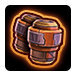 |
High Capacity Containers | Increases the radius Blaze's of Oil Spill by 100%. |
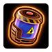 |
Hades Oil | Improves the damage dealt by the Enflame effect from Blaze's Oil Spill to deal +25 per second vs. light units. |
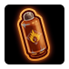 |
Wildflame Fuel Additives | When units Enflamed by Blaze's Oil Spill die, they explode, spreading Enflamed to enemy units in the area. |
Ultimate Gear:
| Ultimate Gear | Name | Description |
|---|---|---|
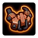 |
XCMC-670 Combat Suit | Reduces all damage taken by Blaze to 30. |
Notes:
- He is a must-get on infested maps.
- "Wildflame Fuel Additives" is his most important upgrade, as it can cause fires to chain.
- Oil Spill can be used to reduce enemy attack speed, increasing his effectiveness in tanking, and reveals ground cloaked units.
- Ultimate Gear should be a low priority upgrade on Infested maps.
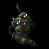
Rob "Cannonball" Boswell
Ability:
| Ability | Name | Description | Cooldown |
|---|---|---|---|
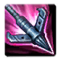 |
Heavy Impact | Cannonball pulls himself to the target location, dealing 20 damage and stunning enemy units on impact. | 15 seconds |
Primary Gear:
| Gear | Name | Description |
|---|---|---|
| X-71 Impact Boots | Increases the stun duration and radius of Cannonball's Heavy Impact by 100%. | |
 |
Critical Response System | Allows Cannonball to become immune to damage for 5 seconds and restores all his life when he takes fatal damage. Cannot occur more than once every 60 seconds. |
| Redline Power Cells | Increases Cannonball's attack speed by 3% with each attack, up to a maximum of 60%. Increases his attack damage by 3 with each attack, up to a maximum of 60. |
Ultimate Gear:
| Ultimate Gear | Name | Description |
|---|---|---|
| M.A.L.I.C.E. Ammunition | Provides a 30% chance that Cannonball will deal 4 times more damage with his attacks. |
Notes:
- Really good at tanking due to the Critical Response System Upgrade.
- For long-term DPS'ing, the Redline Power Cells Upgrade and the M.A.L.I.C.E. Ammunition can compound properly.
- As most engages in the game are short, it is quite difficult to take advantage of those upgrades.
- Heavy Impact should be used to bring Cannonball to the front of your outlaws where he can tank.
Kev "Rattlesnake" West
Ability:
| Ability | Name | Description | Cooldown |
|---|---|---|---|
| Deploy Revitalizer | Places a structure on the ground that heals all friendly units in an area around the structure for 2% of their life every second. 3 charges max. | 30 seconds |
Primary Gear:
| Gear | Name | Description |
|---|---|---|
| Umojan Signal Modulator | Improves the healing rate of Rattlesnake's Revitalizers by 100%. | |
| Moebius Aggression Blend | Units in range of Rattlesnake's Revitalizers gain 15% additional attack speed. | |
| Secret Stash Stimpack | Heals Rattlesnake for 2 life per second and increases his attack and movement speed for 15 seconds. |
Ultimate Gear:
| Ultimate Gear | Name | Description |
|---|---|---|
| Hammer Munitions | Rattlesnake's attacks slow and deal 50% of their damage in an area of effect. |
Notes:
- Secret Stash Stimpack should be a low-priority upgrade due to it not being as good as some of the other gear.
- Rattlesnake is a must-have in most compositions due to his ability to heal as well as increase the damage output of other outlaws.
- Revitalizers do not stack.
- He does draw aggro, so keep an eye out for his HP.
- Getting his Ultimate Gear is also not worth the cost and should be one of the lowest priority upgrades.
Fixers:
Vega
Ability:
| Ability | Name | Description | Cooldown |
|---|---|---|---|
| Dominate | Temporarily take control of target enemy unit and increases its damage by 50%. Dominated units self-destruct after 240 seconds. Holds up to 3 charges. | 30 seconds |
Primary Gear:
| Gear | Name | Description |
|---|---|---|
| Moebius Psionic Motivator | Vega's Dominate fully restores the target's life, shields, and energy and increases its attack speed by 75%. | |
| Neural Disruption Device | Vega's Dominate ability confuses enemy units in an area around the dominated unit, forcing them to attack each other for 10 seconds. | |
| Psi Projector | Grants Vega the ability to bring up to 5 enemy air units to the ground, allowing friendly units to attack them as if they were ground units. |
Ultimate Gear:
| Ultimate Gear | Name | Description |
|---|---|---|
| Type-88 Persuader | Increases the duration of Vega's Dominate by 200% |
Notes:
- Dominate, combined with Neural Distruption Device can be used to deal with tough attack waves.
- With adequate micro, your Vega can steal Amon's units and use them against him.
- Moebius Psionic Motivator is a good upgrade to have if you intend on stealing units.
- If you intend on using Dominated units to help push through the mission, the Ultimate Gear is recommended.
Nux
Ability:
| Ability | Name | Description | Cooldown |
|---|---|---|---|
| Ultrasonic Pulse | Fires pulses of ultrasonic energy that lasts 6 seconds, causing 20 damage per second to enemy units in the target area. Does not damage friendly units. Holds up to 3 charges. | 30 seconds |
Primary Gear:
| Gear | Name | Description |
|---|---|---|
| T4 Cloudburst Shells | Increases the damage of Nux's Ultrasonic Pulse by 50%. | |
| Ultrasonic Boosters | Increases the radius of Nux's Ultrasonic Pulse by 50%. | |
| Crystalline Amplifiers | Increases the duration of Nux's Ultrasonic Pulse by 100%. |
Ultimate Gear:
| Ultimate Gear | Name | Description |
|---|---|---|
| N3 Networking | Grants Nux the ability to reduce the charge-up times and cooldowns of the primary abilities of all nearby Outlaws by 20%. |
Notes:
- Can clear out entire attack waves with one Ultrasonic Pulse combined with Tychus' Shredder Grenade with the KD9a Implosion Core Upgrade.
- Ultrasonic Pulse can be used to reveal cloaked and burrowed units.
- The Crystalline Amplifiers Upgrade is not necessary if you don't intend to get his Ultimate Gear.
- Works well with other outlaws due to his Ultimate Gear.
Lt. Layna Nikara
Ability:
| Ability | Name | Description | Cooldown |
|---|---|---|---|
| Reinvigorating Burst | Instantly heals friendly units in an area around Lt. Nikara for 200 life and grants them 25% increased attack and ability damage. Regenerates an additional 10 life per second over 10 seconds. | 30 seconds |
Primary Gear:
| Gear | Name | Description |
|---|---|---|
| Umojan Repair Nanites | Increases the immediate and periodic heal of Lt. Nikara's Reinvigorating Burst by 100%. | |
| Procyon Serum | Increases the healing rate of Lt. Nikara's Super Heal by 100%. | |
| Procyon Twin Heal Beam Gauntlet | Allows Lt. Nikara to cast Super Heal on two targets at the same time. |
Ultimate Gear:
| Ultimate Gear | Name | Description |
|---|---|---|
| XM-77 Matrix Generator | Enables Lt. Nikara to surround a target friendly unit with a shield that can absorb 400 damage over 20 seconds. |
Notes:
- Extremely powerful healer.
- Can be used with Vega at the start to heal high HP dominated targets.
- Reinvigorating Burst provides a 25% buff to all damage types including abilities and spells.
- Has some niche uses in some mutations.
In addition to the equipment above, Tychus has three "Tri-Outlaw" upgrades. These are listed below:
| Upgrade | Name | Effect | / | Research Time |
|---|---|---|---|---|
| ITC-E Triggers | Increases the attack speed of Tychus, Crooked Sam, and Sirius by 25%. | 150/150 | 90 seconds | |
| Endurance Supplements | Increases the life of Blaze, Cannonball, and Rattlesnake by 25%. | 150/150 | 90 seconds | |
| Flashforce GDM Visor | Provides Vega, Nux, and Lt. Nikara with Detection, allowing them to see cloaked and burrowed enemy units. | 75/75 | 90 seconds |
Build Order
Below is the standard economic build order for Tychus. For more information on how to read and construct your own build orders, please check the Build Order Theory page.
17 Command Center
18 Refinery
19 Refinery
20 Engineering Bay
22 2x Turrets -> Rocks
Gameplay Guide
Playstyle Traps
A common trap for Tychus players is focusing on attack and armor upgrades while going for a Vega-centric build. Units that are dominated do not get benefits of attack and armor upgrades from Tychus. Therefore, these upgrades should be a low priority.
With higher skill levels, it is even possible to go for a greedy play and get out other damage dealers first, relying purely on the healing from Medivac Platforms.
Playstyle Tips
- Ensure you have adequate medivac platforms to provide you with the mobility you need to handle the mission. Healing is stopped when damage is taken, so if Medivacs are used for healing, ensure you move away from the enemy lines.
- Three Engineering Bays are recommended. Two will be researching the attack and armor upgrades, while the other one researches other upgrades.
- Build an early Command Center and either use Tychus (foregoing an early Engineering Bay) or two Turrets (with the build order above) to clear the expansion. This depends if you want to push with Tychus early or if the expansion is contested.
- You can revive Tychus by calling down the Odin, saving you on the mineral costs.
- If your ally doesn't help, it may be necessary to go for Sirius first for early DPS. In those cases, ensure you have a Medivac Platform ready to use for heals.
- Your choice of healer (Rattlesnake/Nikara) will depend on which outlaws you use. A build that uses lower HP outlaws (Fixers) will gain more benefit from having Nikara, whereas a higher HP outlaw set (Muscles) will benefit more from having Rattlesnake.